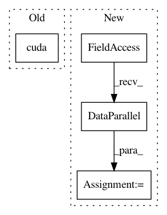

739774b2ec2e812cb8a1da073e49a06f6f7c7e87,seq2seq/python/pytorch/train.py,Trainer,__init__,#Trainer#Any#Any#Any#Any#Any#Any#,14
Before Change
self.crit = model.create_loss()
if gpu:
self.model.cuda()
self.crit.cuda()
def _wrap(self, ds):
src = ds["src"]
After Change
self.model = model
self.crit = model.create_loss()
if gpu:
self.model = torch.nn.DataParallel(model).cuda()
self.crit.cuda()
def _wrap(self, ds):
src = ds["src"]
In pattern: SUPERPATTERN
Frequency: 4
Non-data size: 4
Instances
Project Name: dpressel/mead-baseline
Commit Name: 739774b2ec2e812cb8a1da073e49a06f6f7c7e87
Time: 2017-06-01
Author: dpressel@gmail.com
File Name: seq2seq/python/pytorch/train.py
Class Name: Trainer
Method Name: __init__
Project Name: pytorch/examples
Commit Name: 4af62f988aef58b076904ab0e8dffef1ea6b4840
Time: 2017-03-14
Author: bryan.mccann.is@gmail.com
File Name: OpenNMT/train.py
Class Name:
Method Name: main
Project Name: ruotianluo/self-critical.pytorch
Commit Name: ff3cfae418fc645b35c745752845dff28061a69a
Time: 2017-10-25
Author: rluo@ttic.edu
File Name: train.py
Class Name:
Method Name: train